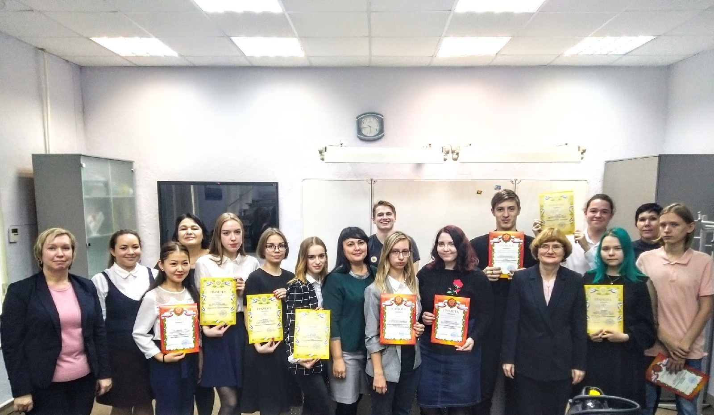

23.11.2019 12:00
22 ноября 2019 года в ГАПОУ СО «Каменск-Уральский политехнический колледж» прошёл Областной конкурс чтецов среди организаций СПО «Я лиру посвятил народу своему». Уже стало традицией, что в ноябре наш колледж гостеприимно открывает двери для любителей русской и английской поэзии из разных колледжей и техникумов. География участников расширяется с каждым годом. В этом году у нас присутствовали 50 представителей из 10 колледжей и техникумов:
| Участник | Место обучения | Место |
|---|---|---|
| Номинация «Поэты – юбиляры» | ||
| Ракова Елизавета Олеговна | ГБПОУ СО «Уральский колледж бизнеса, управления и технологии красоты» | I место |
| Куксовская Дана Вячеславовна | ГАПОУ СО «Каменск – Уральский радиотехнический техникум» | II место |
| Меркурьев Никита Александрович | ГБПОУ СО «Уральский колледж бизнеса, управления и технологии красоты» | II место |
| Емельянова Ксения Дмитриевна | ГАПОУ СО «Каменск-Уральский техникум металлургии и машиностроения» | III место |
| Термаева Марина | ГАПОУ СО «Каменск-Уральский политехнический колледж» | III место |
| Фомина Алена Андреевна | ГАПОУ СО «Асбестовский политехникум» | III место |
| Номинация «Стихи любимых поэтов» | ||
| Бахтерев Константин Александрович | ГАПОУ СО «Каменск – Уральский радиотехнический техникум» | Гран-при |
| Иванова Полина Алексеевна | ГАПОУ СО «Каменск-Уральский политехнический колледж» | I место |
| Краснопольская Мария | ГАПОУ СО «Каменск-Уральский педагогический колледж» | II место |
| Тропина Полина Витальевна | ГАПОУ СО «Каменск-Уральский педагогический колледж» | II место |
| Сметанин Андрей, Кирилл Симанов | ГАПОУ СО «Каменск-Уральский политехнический колледж» | III место |
| Долматова Виктория Ильинична | ГАПОУ СО «Каменск-Уральский техникум торговли и сервиса» | III место |
| Паньшин Иван Иванович | ГБПОУ СО «Сысертский социально-экономический техникум «Родник» | Особое мнение жюри |
| Черкашина Ольга Николаевна | ГБПОУ Свердловской области «Свердловский областной педагогический колледж» | Приз зрительских симпатий |
| Номинация «Стихи на языке туманного Альбиона» | ||
| Фролова Полина | ГАПОУ СО «Каменск-Уральский политехнический колледж» | I место |
| Щипунова Елизавета | ГАПОУ СО «Каменск-Уральский педагогический колледж» | II место |
| Коновалова Ксения | ГАПОУ СО «Каменск-Уральский радиотехнический техникум» | II место |
| Гареев Максим | ГАПОУ СО «Каменск-Уральский политехнический колледж» | III место |
| Жиркова Полина | ГАПОУ СО «Асбестовский политехникум» | III место |
| Кучина Валерия | ГАПОУ СО «Каменск-Уральский политехнический колледж» | III место |
| Коломольцева Екатерина | ГАПОУ СО «Каменск-Уральский техникум торговли и сервиса» | Особое мнение жюри |
| Кучина Валерия | ГАПОУ СО «Каменск-Уральский техникум торговли и сервиса» | Приз зрительских симпатий |
01.11.2019 12:05
С 26 по 29 октября 2019 года в г. Казань прошел очный этап обучения в рамках реализации проекта «Развитие модели повышения качества обучения иностранным языкам в процессе подготовки высококвалифицированных специалистов и рабочих кадров с учетом современных стандартов и передовых технологий». От нашего колледжа участвовали представители управленческой команды, а также преподаватели дисциплин профессионального цикла: Анчугова Л.Н., Бердышева О.Ю., Киселева М.Н., Лихачева Н.М., Неверов И.А.
Повышение квалификации управленческих команд, преподавателей и мастеров производственного обучения организаций, реализующих программы среднего профессионального образования, по развитию языковых компетенций у студентов прошло по заказу и под патронатом Министерства просвещения Российской Федерации в сентябре-октябре 2019 г. Включало в себя 48 часов дистанционного обучения и 24 часа очного обучения.
Данное повышение квалификации реализуется с целью предоставления комплексных знаний сотрудникам из числа управленцев, преподавателей и мастеров ОО СПО по внедрению и развитию Модели повышения качества обучения иностранным языкам в процессе подготовки высококвалифицированных специалистов и рабочих кадров с учетом современных стандартов и передовых технологий.